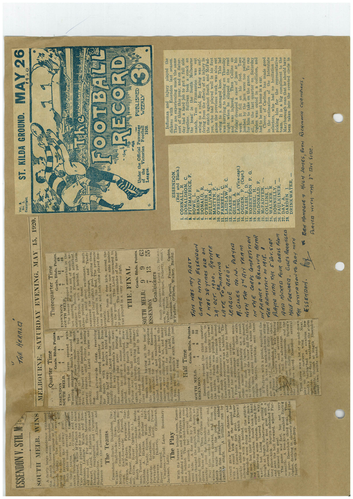

Book 1 · scan 159


Description
Transcription
Context
Review notes
Compare the machine draft with the scan. Handwriting and names need human review.
Artifacts
Edit the artifacts field in this note’s frontmatter to change these records. This summary is generated.
B01-S159-A01 — Newspaper clipping — Book 1, scan 159
Types: Newspaper clipping
Scope: Whole scanned page; individual items can be split out during review.
Caption: Not mapped yet.
Caption source: Not recorded yet.
Caption status: unmapped
Machine transcription
ESSENDON V. STH. MAs SOUTH MELB. WINS A fairly large attendance witnessed the match between South Mentorere bourne today. played at bast pand sround was soft owing to the recent rain. A SENT Breeze favored the raiiway goal. Both sides made several alterations teams. the Esseneron o Brien and Giles ranks Drea While M Faden Can Ascot reappeared, inson, Taided for ith and Don- ala stood out. For South Melbourne, Stewart, Laird, S. Hiskins, Hynes and Donerty reappeared, and Carpenter, Rademacher. Samson. Allison and Pearson were the absentees. The Teams Essendon. Walker. -Backs: Donaldson, Dias, Half-backs: Porve. Martyn. Centres: Cornall, Collins, Sul- Half-forwards: O'Brien, M'Fadyen. Forwards: Farrell Gar- Followers: Dus- den, Tileger, Bovin: Ogden (C.) Seeds- i sell. Giles Melbourne.- South -Backs: Turner, Fleiter. Hack-backs: S. Hiskins, Hiskins, Belcher Half- Centre: Fandy, ryne, road Power: forwards: Pontanas: Robertson. Laird. Smith. Wootton, Followers: Doherty, •' Halloran Rover: Steward. Umpires.-Field: Lane. Boundary: Jackson, Laity. The Play With the breeze behind them, Essen- don dashed away, and M'Fadyen snap- ped a hehind. The red-and-blacks con- tinued to attack; but shots went wide. A fine run by V. Belcher soon changed the aspect, and South at- tacked hotly: Baring, marking, drove them off. Then 0 Brien scored another point for Essendon. Play then veered to the other end, where Woetton marked, and from 1 sharp angle hit the Thost scoring M Fadyen addedi South's first point brilliant run by another single. Cornall gave Farrell his chance, and Tineser scored Essendon's first quickly added another, which Farrell followed up with a behind. Essendon were doing all the attack- ing now, but their forwards were mak- ing costly mistakes. South took a hand and showing some system, surged for- ward: Laing barred the way, though at length Robertson, getting a scored South's first goal with a ions place-kick. Martyn defended well, and sent the ball forward, where Far- rell missed the goal. game was fast, but very scientific. A free-kick enabled Baring to punt Essendon's third goal. Then Ogden, dashing in, cleverly attained the fourth with a stab-drop. THE HERALD Vot. 9. NO. 5 Copyright. ST. KILDA GROUND. MAY 26 MELBOURNE, SATURDAY EVENING, MAY 15, 1920. Quarter Time Goals. Bhas. Points. Threequarter Time Goals. Bhds. Points. ESSENDON 12 SOUTH MELB. ESCENDON The second opened with SOUTH MELB The breeze dropped somewhat in the Wootton snapping South's second big ind was not of much as- point terbarament, South last quarter south. but #sistance to Essendon attacked. free to Dussel gave Essendon a tem- land O'Brien. with a behind, put them porary respite, until Fleiter, passing three points in front. South Then. amid great excitement, Jandy quickiy, enabled Laird to raise one answered the challenge, flag. Soon afterwards Lugg, receiving snapped their eighth goal, putting them from etcher, seored another point three points in the lead. The pressure mith a place kick from was on now, and both sides played des- nearly half way. South's third goal perately. rapidly followed, Laird being respon- Power. from a free kick, scored the sible. It was Essendon's turn next; maximum. South were now nine peints fine concerted play gave Raring to the good. This Laird increased to chance, but only a minor point re- 10 points. The remainder of the game sulted., South soon retaliated, Stew- was played in a very poor light. their fourth big point. well forward THE FINAL again, and Doherty, pieking up smart- ly, added South's fifth goal in bril- Goals. Bhds. Points. iant fashion. South were having all the best of SOUTH MELB. 9 63 this quarter, and had the opposing ESSENDON 13 a time. 55 backs rattled for Essendon however. maintained Goalkickers rallied. fierce assault on South's goal: but the South Melbourne:- Laird 2), Robert- players were slipping a lot, and many son, Wootton, Stewart, Doherty, Smit?, good efforts went for nothing, until Sullivan raised one flag. Laird, from Tandy. Power. a free, put on South's sixth goal just Mraden, Beten, Walker, Baris. before the bell rang. Half Time Goals. Bhes. Points. AT he FOOTBALL RECORD Under the Official Patronage the Victorian Football League. 1920. PUBLISHED WEEKLY SOUTH MELB. ESSENDON Essendon opened the third quarter with a strong attack; but South, in the teeth of the breeze, quickly turned the tables. Smith was pulled in front of goal, and from the free-kick scored the South Melbourne's seventh Essendon's response was a behind. The wind caused most of the play to hover vound the south-east c From a scrimmage MEadyen snap- ped Essendon's fifth goal; their sixth came almost immediately as a result of a fine dash by Ogden, to O Brien, and the latter did the triek. South then surged forward, where the reliable Martyn, marking, sent them M Fadyen, with a point, equalised the scores. It was a neck-and-neck strug- the crowd fairly roared as now. a pasendon a point thing Beherty South's THIS HAS MY FIRST GAME HITH ESSENdON / WAS 28 YeARS OLD ON 29' OCT. 1920. PATHER LATE 1ON BEARING M LEAGUE REBÚT. A. GILES No.lf. PaRyer WITH THe 3IDIY TEAM IN THE CORPS COMPETITION I FRANCE • BELGIUM AFTER THE ARmISTICE D 1918. A open. Baring's ine derence saved Desendon several times, Then there was a lot of up-and-down. play on the eastern wing. Next. anxious, minthes but hey Weathered the stew gallantly, though at length Essendon crept two points ahead. ANA KICKED FOUR GORAS FROM HALE FORWARIA. GILeS ARRANGED THe INVITATiOn To PLAY HITH ESSENDor. ESSENDON. (Red and Black.) 1. CORNALL, DONALDSON, FITZMAURICE, F. BOWE, L. BARING, DONALD, R. SULLIVAN: 1. 10. MARTYN, P. O'BRIEN, T. 12. EARDLAW R. C 13. FRASER, W. 14. GILES. 15 LAING, 15. LADO, R (Vice-capt.) 18. WORRISON P. G. 19. DUSSEL, 20. MeDONALD. F. 21. McFADYEN, 22. COLLINS R 24. WALKER. 25. DONNELLY, - 27. DAY. A. 98 GARDEN. T. DRINKWATER, - Influenza and injury played the dickens with Essendon last season. They are experiencing much the same sort of thing this year, and on Satur- day had a hard job to get a full side together. Sullivan took a crack on the head in the South Melbourne match, Tom Fitzmaurice was out owing to a cold, Roy Laing was suf- fering from the effects of an injury in the match against South, and MeFad- ven, who had played well in his first game the previous week, was also out owing to a damaged knee. This lad was hurrying to training on Thursday night when he slipped on the road and was injured. Then Collins on Friday dropped a case of jam at his work. It fell on his foot. Toes jambed by the jam were too painful for him to take on the game. To cap all, in the last quarter on Saturday Ogden was outed in a collision, and had to be sent home in a car. Clover, of Carlton, has made good in the estimation of the Interstate selectors, who had no hesitation in picking him for the representative team. It is a big compliment to the Maryborough man that he should have been taken into the coveted cirele in DAN MONOGUE & HUGH JAMES, BOTH RICHMONA CHAMPIONS,